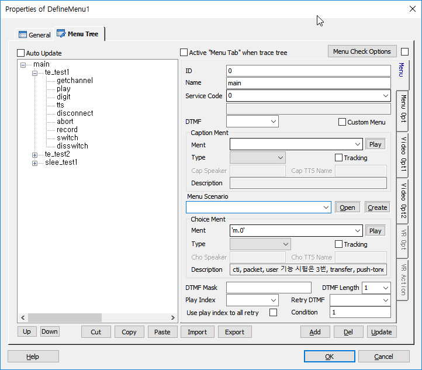
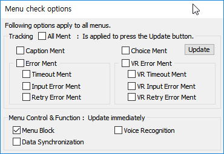
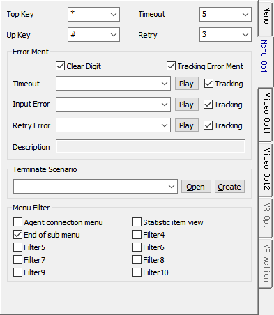
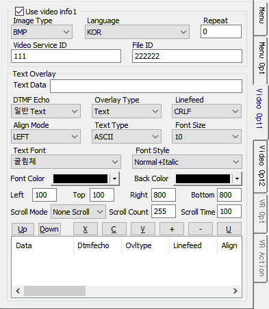
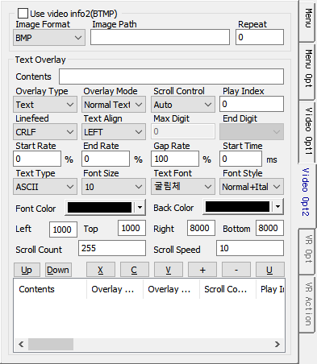
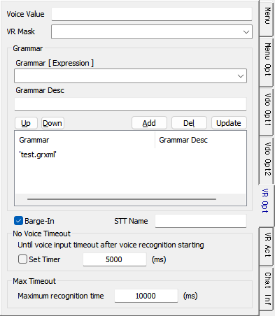
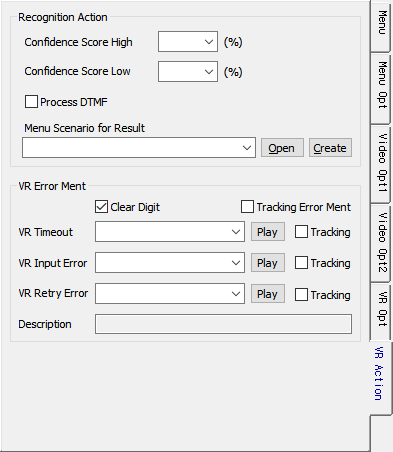
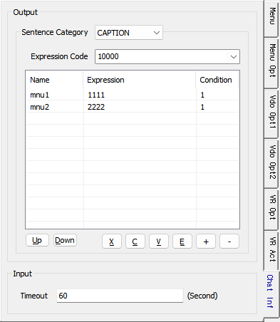

시나리오에서 사용될 Menu Tree 정보를 모두 등록하는 Item 으로서 메뉴 상에서 동작 할 수 있는 기능인 메뉴 시나리오 파일 지정, Dtmf입력, 멘트 재생, Retry Count, Timeout 등을 입력하여 Tree 리스트를 관리하는 역할을 수행 합니다.
DefineMenu Item은 Global.SSFX 에서만 사용 할 수 있고, 여러개의 Item을 정의할 수 있습니다.
DefineMenu는 Start Item과 반드시 링크 되어야 빌드 시 적용 됩니다.
ICON

PROPERTIES
 Menu Tree
Menu Tree

Auto Update Check Box : 메뉴 트리 리스트에서 메뉴를 선택하면 Properties 그룹 항목에 선택 메뉴에 대한 설정 정보들이 나타나게 되는데 Auto Update를 체크하게 되면 정보 수정후 Update Button을 누르지 않아도 자동으로 설정이 적용됩니다.
Find Button : 에디트 박스에 Menu ID 를 입력하고 버튼을 누르면 해당 메뉴 트리의 속성으로 이동합니다.(마우스 포인터가 컨트롤 위치로 가야 컨트롤이 보이게 됩니다.)
Active "Menu Tab" when trace tree Check Box : 메뉴 트리에서 메뉴를 이동하면 여러개의 탭 중 어느 탭에 있어도 "Menu Tab"으로 이동합니다.
Menu Check Options Button : 메뉴 체크 옵션 다이얼로그를 팝업 합니다.
Menu Check Options Check Box : 체크하면 메뉴 체크 옵션 버튼을 누르지 않고 마우스를 포인터를 위치시키기만 해도 다이얼로그를 팝업합니다.
Up Button : 선택한 메뉴를 위로 이동 합니다.
Down Button : 선택한 메뉴를 아래로 이동 합니다.
Copy Button : 트리 리스트에 구성된 메뉴를 선택하고 버튼을 누르면 메뉴를 복사하여 클립보드에 넣습니다.
Paste Button : 트리 리스트에 구성된 메뉴를 선택하고 버튼을 누르면 클립보드에 있는 복사된 메뉴가 그 하위 메뉴로 추가 됩니다. 붙여넣기가 될때 복사된 원본 메뉴의 ID, Name뒤에 자동으로 랜덤한 숫자를 붙여 중복을 피합니다.(내부 적으로 GUID도 새로 생성되며, Name은 중복이 허용되나 트리 리스트에 보여지는 내용이 Name이므로 ID와 같이 바꾼다)
Import Button : 특정 포멧으로 Excel파일로 작성된 메뉴트리를 로드하여 메뉴트리를 구성합니다.
Export Button : 메뉴 트리를 Excel 파일로 출력합니다.
Add Button : 선택한 메뉴 하위에 설정한 메뉴를 추가 합니다.
Del Button : 선택한 메뉴를 메뉴 트리에서 삭제 합니다.
Update Button : 선택한 메뉴의 내용을 갱신 합니다.
Menu Check Options Dialog

Tracking All Ment Check Box : 모든 멘트를 트래킹
Caption Ment Check Box : 캡션멘트 트래킹
Choice Ment Check Box : 선택 멘트 트래킹
Update Button : 체크한 멘트 트래킹 설정을 적용합니다.(현재 메뉴 아이템의 전체메뉴)
Error Ment Check Box : 모든 에러 멘트를 트래킹
Timeout Ment Check Box : 메뉴선택 타임아웃 멘트 트래킹
Input Error Ment Check Box : 메뉴선택 입력에러 멘트 트래킹
Retry Error Ment Check Box : 재시도 알림 멘트 트래킹
VR Error Ment Check Box : 모든 음성인식 에러 멘트를 트래킹
VR Timeout Ment Check Box : 음성인식 메뉴선택 타임아웃 멘트 트래킹
VR Input Error Ment Check Box : 음성인식 메뉴선택 입력에러 멘트 트래킹
VR Retry Error Ment Check Box : 음성인식 재시도 알림 멘트 트래킹
Menu Control & Function
Menu Block Check Box : Menu Block 처리 태그를 생성합니다.(운영관리에서(ex.SWAT) Menu Block설정)
Voice Recognition Check Box : 메뉴에서 음성인식을 처리할 수 있도록 합니다.
Data Synchronization Check Box : 이중화 데이터 동기화 처리 Enable/Disable(ForCus 이중화 데이터 동기화 시에 체크해야 함)
ID : Unique한 ID로써 문자 및 숫자로 구성 할 수 있으며 변수는 사용 할 수 없습니다.(시나리오 개발 시 메뉴 ID는 따로 관리 하여야 합니다.)
Name : 메뉴의 이름을 지정 할 수 있으며 ForCus의 EMS 및 SLEE의 메뉴 통계 항목(ID포함)으로 사용됩니다.
Service Code : ForCus의 EMS 및 SLEE의 메뉴 통계 항목으로 사용됩니다. 기존 ID 및 Name을 이용한 통계와 별도로 다른 메뉴라 할지라도 같은 서비스로 통계를 내야할 경우 값을 지정하여 사용합니다.(Service Code의 값이 비어 있을 경우 Menu ID 값이 자동으로 지정 됩니다.), DefineService Code 에서 정의한 Service Code를 선택할 수 도 있습니다.
Dtmf : 현재 속성창의 메뉴가 선택될 DTMF 값(선택 DTMF가 2자리 이상일 경우 직접 입력 합니다)
Custom Menu : 메뉴가 맞춤형 메뉴인지 지정합니다.(SWAT 연동)
Caption Ment
· 도입 멘트를 지정 및 재생 할 수 있는 기능으로 해당 메뉴 진입 시 초기 한번만 재생 됩니다.
Ment : 우측 멘트 리스트에서 멘트를 선택할 수 도 있으며, 멘트를 입력 할 수 도 있습니다. 멘트이름 그대로 입력할 경우는 스트링 표시 문자인 작은 따옴표( ' ) 를 멘트의 양쪽에 붙여 줘야 하고, 변수를 사용 할 수 있습니다.(멘트 리스트의 경우 DefineMent Item에 멘트가 설정되어 있어야 합니다.)
Play Button : Ment항목에 설정된 멘트를 재생 합니다.(Tools>Options>Debug>Ment Path 설정 필요, 단, 가변멘트일 경우 현재는 재생 불가)
Stop Button : 재생 중인 멘트를 중지 합니다.
Type : 멘트의 유형을 설정합니다.(MentID, TTS-KSC5601, TTS-Stream, TTS-File)
Cap Speaker : Caption Ment의 Ment Type으로 TTS-Stream, TTS-File이면 Speaker ID 를 설정하여 TTS의 화자를 선택할 수 있습니다.(값을 지정하지 않으면 시스템 설정 Speaker ID가 자동 설정 됩니다)
Cap TTS Name : Caption Ment의 Ment Type으로 TTS-Stream, TTS-File이면 TTS Name 을 설정하여 TTS 서버를 선택할 수 있습니다.
- 값을 지정하지 않으면 기본 TTS 서버로 처리 됩니다.
- v5.x : 'ADT' 로 지정하면 TTS Adapter 를 통한 TTS 연동을 지원합니다.(Multi TTS 지원 불가)
- v6.0 이상 : "SWAT>IVR관리>미디어관리>TTS 관리" 에 등록한 Name 을 지정하면 TTS Adapter 를 통한 Multi TTS 연동을 지원합니다.
Description : Ment항목에 멘트를 설정 할 때 멘트 리스트에서 선택하는 경우 설정된 멘트의 설명이 있을 경우 표시 합니다.
Menu Scenario
· 호출할 메뉴 시나리오 파일(.MSFX)을 지정 할 수 있습니다.(Choice Ment 전에 호출 됩니다.)
Open Button : 설정된 메뉴 시나리오가 있을 경우 시나리오를 오픈 합니다.
Create Button : 설정된 메뉴 시나리오는 있는데 실제 시나리오 파일이 없는 경우 생성 할 수 있습니다.
Choice Ment
· 메뉴 선택 멘트를 설정 합니다.
Ment :우측 멘트 리스트에서 멘트를 선택할 수 도 있으며, 멘트를 입력 할 수 도 있습니다. 문자로 입력할 경우는 스트링 표시 문자인 작은 따옴표( ' ) 를 멘트의 양쪽에 붙여 줘야 하고 여러개의 멘트를 설정 할 수 있습니다. 변수를 사용 할 수 있습니다.(멘트 리스트의 경우 DefineMent Item에 멘트가 설정되어 있어야 합니다.)
Play Button : Ment항목에 설정된 멘트를 재생 합니다.(Tools>Options>Debug>Ment Path 설정 필요)
Stop Button : 재생 중인 멘트를 중지 합니다.
Type : 멘트의 유형을 설정합니다.(MentID, TTS-KSC5601, TTS-Stream, TTS-File), MenuChange에서 변경할 수 있습니다.
Cho Speaker : Choice Ment의 Ment Type으로 TTS-Stream, TTS-File이면 Speaker ID 를 설정하여 TTS의 화자를 선택할 수 있습니다. MenuChange에서 변경할 수 있습니다.(값을 지정하지 않으면 시스템 설정 Speaker ID가 자동 설정 됩니다)
Cho TTS Name : Choice Ment의 Ment Type으로 TTS-Stream, TTS-File이면 TTS Name 을 설정하여 TTS 서버를 선택할 수 있습니다.
- 값을 지정하지 않으면 기본 TTS 서버로 처리 됩니다.
- v5.x : 'ADT' 로 지정하면 TTS Adapter 를 통한 TTS 연동을 지원합니다.(Multi TTS 지원 불가)
- v6.0 이상 : "SWAT>IVR관리>미디어관리>TTS 관리" 에 등록한 Name 을 지정하면 TTS Adapter 를 통한 Multi TTS 연동을 지원합니다.
Description : Ment항목에 멘트를 설정 할 때 멘트 리스트에서 선택하는 경우 설정된 멘트의 설명이 있을 경우 표시 합니다.
Dtmf Mask : 현재 메뉴의 하위 메뉴에 대한 DTMF Masking을 지정 합니다. 미지정 시에는 하위메뉴를 자동으로 구성하여 처리 합니다.( 예 : 1|2|3|4 )
※ 주의 : 지정한 DTMF Mask 와 실제 현재 메뉴의 하위 메뉴를 비교하여 유효한 하위 메뉴만 처리 됩니다. GetDigit 의 DTMF Mask 는 지정된 DTMF 모두가 유효 하지만 여기서는 비교를 통해서 유효한 메뉴가 결정 됩니다. 실제 하위 메뉴에 없는 DTMF 를 Masking 한 경우는 유효하지 않습니다.
DTMF Length : 선택될 DTMF의 값의 길이(입력하지 않으면 기본값으로 1 이 적용 됩니다)
Play Index : Timeout-Index로써 선택 멘트가 재생된 후 DTMF의 입력이 없을 경우 Play Index를 지정 하여 그 인덱스의 멘트를 재생 할 수 있습니다. Play Index란 선택 멘트의 Ment항목에 멘트를 설정할 때 여러개의 멘트를 설정 할 수 있는데 첫번째 부터 순서적으로 1 베이스로 인덱스가 설정됩니다.(Ment 항목 가변 멘트 설정의 예 : 'ment1','ment2','ment3' - 멘트는 쉼표( , )로 나누며 변수와 문자를 같이 쓸 수는 없습니다)
Retry DTMF : 선택 멘트를 재청취 하기위한 DTMF 값입니다.
Use play index to all retry Check Box : Play Index가 기존에는 Timeout Index로 사용되었지만 체크를 하면 모든 멘트를 다시 재생하는 상황에 사용할 수 있습니다.
Condition : 각 메뉴의 실행 조건을 설정 합니다.

Top Key : 최상위 메뉴 이동키
Up Key : 상위 메뉴 이동키
Timeout : 메뉴 입력 Timeout 시간 지정(단위. second)
Retry : Timeout 또는 입력오류 시 재 시도 횟수
Error Ment
Clear Digit Check Box : Error Ment Play 시에 입력된 DTMF를 버퍼에서 제거하여 Error Ment가 Skip되지 않도록 합니다.
Tracking Error Ment Check Box : 모든 에러 멘트를 트래킹
Timeout Ment : Timeout 시 재생 할 멘트
(Timeout Ment) Tracking Check Box : 메뉴선택 타임아웃 멘트 트래킹
Input Error Ment : 입력오류 시 재생 할 멘트
(Input Error Ment) Tracking Check Box : 메뉴선택 입력에러 멘트 트래킹
Retry Error Ment : Retry 횟수 오류 시 재생 할 멘트
(Retry Error Ment) Tracking Check Box : 재시도 알림 멘트 트래킹
Play Button : Ment항목에 설정된 멘트를 재생 합니다.
Stop Button : 재생 중인 멘트를 중지 합니다.
Description : Timeout Ment, Input Error Ment, Retry Error Ment 설정 시 멘트 설명이 있을 경우 표시 함
Terminate Scenario
· 종료조건이 발생 했을 때 시나리오를 지정해 놓으면 해당 시나리오을 처리하고 종료한다.
Open Button : 설정된 메뉴 시나리오가 있을 경우 시나리오를 오픈 합니다.
Create Button : 설정된 메뉴 시나리오는 있는데 실제 시나리오 파일이 없는 경우 생성 할 수 있습니다.
Menu Filter
· 각 메뉴별(메뉴 ID)로 메뉴에서 처리하고 있는 서비스 또는 기능을 표시하여 운영관리(SWAT)에서 필터링 할수 있도록 한다.
· 빌드를 하면 총 10개의 필터링 정보를 표시하는 SXML태그가 생성된다.(예제 :menufilter="0010000000")
· 필터는 고객사 별로 필터 1부터 10까지 설정해서 사용할 수 있다.(이 값을 참조하는 운영관리 또는 통계의 처리 부분과 합의 필요)
· 기 지정된 필터는 이전에 사용된 필터이며 현재 사용 중이기에 유지하고 있으며 추가되는 항목은 그 다음으로 사용하였다.(값을 참조하는 부분에서 기 지정된 값을 사용 중인 코드가 있을 수 있어서 유지하며, 처리 부분과 합의 만 된다면 고객사 별로 필터를 1번 부터 새로 설정하여 사용해도 무방하다)
· 필터별로 새 의미를 부여하고 새로 구성 또는 필터를 추가하는 경우에 필터 타이틀을 변경하여 해당 필터가 어떤 필터인지 표시가능하다.
* 리본메뉴 Tools > Options > Application > Component > DefineMenu Item > Set Menu Filter Title
· 현재까지 사용된 필터
Agent connection menu : 상담원 연결 서비스 메뉴 표시
Statistic item view : 통계 항목 보이기
End of sub menu : 메뉴 종단 표시

Stream Info
Image Type : 비디오 이미지 타입을 지정 합니다.
Language : 비디오 서버의 언어를 지정 합니다.
Repeat : 비디오 재생 반복 횟수를 지정 합니다.
Service ID : 정의된 Service ID를 지정 합니다.( 예 : 삼성화재 = SMH )
- Service ID는 비디오 서버에서 지정한 사이트별로 정의한 ID 입니다.
File ID : 비디오 파일의 명을 지정 합니다.
Use video info1 Check Box: Video Opt1 을 사용 합니다.
♣ 참고. 비디오 서버의 비디오 파일 구조
[ AAA-CCC-XXXXBBBBBB.ZZZ ]
AAA : Service ID
CCC : Language
XXXX : 파일 형태 구분자(비디오 서버에서 지정)
BBBBBB : File ID
ZZZ : Image Type
예 : SMH-KOR-XXXXSMH00001.AVI
Text Overlay
Text Data : 영상에 보여질 Text 데이터를 지정 합니다.(변수 사용 가능)
DTMF Echo : DTMF 출력 모드를 지정 합니다.
Overlay Type : Overlay 출력 타입을 지정 합니다.
Linefeed : 라인 피드의 타입을 지정 합니다.
Align Mode : 정렬 모드를 지정 합니다.
Text Type : Text의 타입을 지정 합니다.
Font Size : 폰트의 크기를 지정 합니다.
Text Font : 폰트를 지정 합니다.
Font Style : 폰트의 타입을 지정 합니다.
Font Color : 폰트의 색을 지정 합니다.
Back Color : 폰트의 배경색을 지정 합니다.
Left : Text의 출력 위치를 지정 합니다.
Top :Text의 출력 위치를 지정 합니다.
Right :Text의 출력 위치를 지정 합니다.
Bottom :Text의 출력 위치를 지정 합니다.
Scroll Mode : 스크롤 여부 및 스크롤 방향을 지정 합니다.
Scroll Count : 스크롤 할 Text 길이를 지정 합니다.
Scroll Time : 스크롤 할 시간을 지정 합니다.(단위. second)
Up Button : 선택한 Text Data 를 위로 이동 합니다.
Down Button : 선택한 Text Data 를 아래로 이동합니다.
Add Button : Text를 추가 합니다.
Del Button : 선택한 Text Data를 제거 합니다.
Update Button : 선택한 Text Data 를 갱신 합니다.

Stream Info
Image File Format : 비디오 이미지 타입을 지정 합니다.
Image File Path : Play할 비디오 파일을 지정 합니다.(Base Path: /bridgetec/ipron32/ir/prompt/service)
Repeat Count: 비디오 재생 반복 횟수를 지정 합니다.
Use video info2 Check Box: Video Info2 을 사용 합니다.
Text Overlay
Contents : 영상에 Overlay 될 데이터를 지정 합니다.(변수 사용 가능)
Overlay Type : Overlay 타입을 지정 합니다.
Overlay Mode : Overlay 출력 모드를 지정 합니다.
Scroll Control Mode : 스크롤 모드를 지정 합니다.
Linefeed : 라인 피드의 타입을 지정 합니다.
Text Align Mode : 정렬 모드를 지정 합니다.
Max Digit : 출력될 최대 Digit개수를 지정합니다(Overlay Mode가 DTMF Echo)
End Digit : Digit 출력을 중단하는 Digit를 지정합니다(Overlay Mode가 DTMF Echo)
Start Rate : 스크롤 시작 위치를 지정 합니다.
End Rate : 스크롤 종료 위치를 지정 합니다.
Gap Rate : 스크롤 사이의 간격을 지정 합니다.
Start Time : Play Start 시간으로 해당 시간 경과 후 Play를 시작 합니다.
Text Type : Text의 타입을 지정 합니다.
Font Size : 폰트의 크기를 지정 합니다.
Text Font : 폰트를 지정 합니다.
Font Style : 폰트의 타입을 지정 합니다.
Font Color : 폰트의 색을 지정 합니다.
Back Color : 폰트의 배경색을 지정 합니다.
Left : Text의 출력 위치를 지정 합니다.
Top :Text의 출력 위치를 지정 합니다.
Right :Text의 출력 위치를 지정 합니다.
Bottom :Text의 출력 위치를 지정 합니다.
Scroll Count : 스크롤 할 Text 길이를 지정 합니다.
Scroll Speed : 스크롤 할 시간을 지정 합니다.(단위. second)
Up Button : 선택한 Text Data 를 위로 이동 합니다.
Down Button : 선택한 Text Data 를 아래로 이동합니다.
Add Button : Text를 추가 합니다.
Del Button : 선택한 Text Data를 제거 합니다.
Update Button : 선택한 Text Data 를 갱신 합니다.

Voice Value : 현재 메뉴에 해당하는 음성인식 결과 값을 지정한다.
VR Mask : 음성인식 마스크는 DTMF Mask 처럼 자동으로 하위 메뉴의 Voice Value 값을 가지고 만들어 지는데, 여기에 인식할 단어와 매칭된 메뉴 아이디를 추가로 지정할 수 있는데, Define VR Mask 에 정의된 Mask ID를 지정 합니다.
Grammar
· 음성인식을 하기 위한 그래머 를 지정 합니다.
Grammar [ Expression ] : 음성인식 그래머를 지정 합니다. 그래머는 문자형으로 입력 할 경우 여러개의 그래머를 리스트에 지정 가능합니다. 변수형으로 지정할 경우는 하나만 가능 합니다. 대신 변수에 여러 개의 그래머를 구분자 "|" 를 가지고 미리 지정 가능 합니다. 단, 문자형과 변수형은 리스트에 같이 넣을 수 없습니다.(변수에 여러개 의 그래머 지정 시 예 : 'file:test1.grxml | file:test2.grxml | file:test3.grxml')
♣ 그래머 타입에 따른 그래머 입력 방법
file - Nuance Engine 이 설치된 장비내에 위치하는 Grammar
builtin - 설치된 언어팩에 내장된 Grammar(각 언어팩에 첨부된 레퍼런스 참조. 한글팩의 경우 Supplement - Korean ko-KR.pdf 참조)
mcmfile - MCM이 설치된 장비에 위치하는 Grammar(비권장)
사용 시에는 그래머 앞에 사용하고 ":"으로 구분한다.
사용 예 : 'file:testGram.grxml', 'builtin:grammar/currency?language=ko-KR', 'mcmfile:testGram.grxml'
Grammar Desc : 지정한 그래머의 설명을 입력 합니다.
Add Button : 지정한 그래머를 그래머 리스트에 추가 합니다.(문자형으로 지정시 여러 개, 변수형으로 지정시 한개 만 지정 가능)
Del Button : 선택한 그래머를 삭제 합니다.
Update Button : 선택한 그래머의 내용을 갱신 합니다.
Barge-in Check Box : 음성인식 시 Barge-In 을 처리할 것인지 유무를 지정 합니다.
STT Name : 등록된 STT Name 입력으로 Multi STT 를 지원합니다.(SWAT>IVR관리>미디어관리>STT 관리)(v6.0 이상)
No Voice Timer
Set Timer Check Box : Set Timer 체크가 되면 음성인식 서버가 시작(voicerecognizestart 태그) 된 후 바로 타이머가 동작하며 체크되지 않으면 음성인식 처리 태그인 voicerecognizeresult 태그 에서 타이머 체크가 시작됩니다.
· Timeout(ms)은 음성이 입력 되기 까지의 타입아웃을 지정 합니다.
- 타임아웃 시간을 지정 하지 않으면 서버 기본 타임아웃이 적용 됩니다.(milisecond 단위)
Max Timeout
· 음성인식 서버가 음성인식을 시작 한 후 인식의 결과가 나오기 까지의 최대 시간을 지정 합니다.(milisecond 단위이며, 기본 값은 10초 입니다)

Recognition Action
· 음성인식 결과를 처리 합니다.
Confidence Score High : 음성인식 신뢰도 높은 값을 지정 합니다.(인식성공으로 처리 하거나 사용자 Confirm 을 받을 때 사용)
Confidence Score Low : 음성인식 신뢰도 낮은 값을 지정 합니다.(인식실패로 처리할 때 사용)
Process DTMF Check Box : 인식 결과 타입이 DTMF인 경우 처리 태그를 생성 합니다. 체크 하지 않은 경우는 결과 처리 시나리오에서 처리 하여야 한다.
Menu Scenario for Result : 음성인식 결과를 처리할 시나리오를 지정 합니다.
Open Button :설정된 메뉴 시나리오가 있을 경우 시나리오를 오픈 합니다.
Create Button : 설정된 메뉴 시나리오는 있는데 실제 시나리오 파일이 없는 경우 생성 할 수 있습니다.
VR Error Ment
Clear Digit Check Box : Error Ment Play 시에 입력된 DTMF를 버퍼에서 제거하여 Error Ment가 Skip되지 않도록 합니다.(음성인식)
(VR) Tracking Error Ment Check Box : 모든 음성인식 에러 멘트를 트래킹
VR Timeout Ment : Timeout 시 재생 할 멘트
(VR Timeout Ment) Tracking Check Box : 음성인식 메뉴선택 타임아웃 멘트 트래킹
VR Input Error Ment : 입력오류 시 재생 할 멘트
(VR Input Error Ment) Tracking Check Box : 음성인식 메뉴선택 입력에러 멘트 트래킹
VR Retry Error Ment : Retry 횟수 오류 시 재생 할 멘트
(VR Retry Error Ment) Tracking Check Box : 음성인식 재시도 알림 멘트 트래킹
Play Button : Ment항목에 설정된 멘트를 재생 합니다.
Stop Button : 재생 중인 멘트를 중지 합니다.
Description : VR Timeout Ment, VR Input Error Ment, VR Retry Error Ment 설정 시 멘트 설명이 있을 경우 표시 함
* ForCus v6.0 이상 지원

※ Chat 지원 시나리오 설정을 했을 때 Chat Info 탭이 활성화 됩니다.
Sentence Category : Chat Info는 Show Chat 시 문장과 함께 Chat 서버로 전송되는데 문장 카테고리별로 설정이 가능합니다.
Expression Code : Chat Text 로 표현하지 못하는 이미지나 아이콘 등을 미리 정의한 코드입니다.
※ 리스트에 입력된 nmu1, mnu2는 Expression Code 10000 의 상세 코드입니다.
※ Chat 콜 일때 Chat Text 출력은 Menu, Menu Opt 탭 > Caption Ment, Choice Ment 및 Error 멘트에 에 입력된 MentID 의 Description 또는 TTS 인 경우 합성 문자열이 출력 됩니다.
Timeout : Get Chat 타임아웃을 설정합니다.(기본 60초)
※ Chat 콜 일때 Menu 에서 Chat Text 인입은 기존 GetDigit 과 동일하게 숫자로 입력을 받아야 메뉴진행이 가능합니다.
ex) '조회는 1번 , 이체는 2번, 상담은 0번을 입력해 주세요' 라는 Chat 출력에서 이체 메뉴로 진행을 하려면 채팅 입력 창에 숫자 "2" 를 입력해야 합니다.
· 음성인식 처리 관련 세션 변수
session.menu.svcid : 서비스 ID
session.menu.retry : 메뉴 트리 음성인식 현재 재시도 카운트
session.menu.vr_mask : 메뉴 트리 음성인식 인식어 마스크
session.menu.vr_maskid : 메뉴 트리 음성인식 추가 인식어 마스크(정의된 음성인식 마크스 ID)
session.menu.vr_grammar : 메뉴 트리 음성인식 그래머(리스트)
session.menu.vr_timeoutment : 메뉴 트리 음성인식 타임아웃 멘트
session.menu.vr_inputerrment : 메뉴 트리 음성인식 오류 멘트
session.menu.vr_retryerrment : 메뉴 트리 음성인식 재 시도 안내 멘트
session.menu.vr_bargein : 메뉴 트리 음성인식 Bargein 여부
session.menu.vr_novoicetimer : 메뉴 트리 음성인식 묵음 타임 아웃 여부
session.menu.vr_novoicetimeout : 메뉴 트리 음성인식 묵음 타임 아웃 시간
session.menu.vr_maxtimeout : 메뉴 트리 음성인식 최대 인식 타임 아웃시간
session.menu.vr_highscore : 메뉴 트리 음성인식 성공으로 처리 하는신뢰도 High Score
session.menu.vr_lowscore : 메뉴 트리 음성인식 성공으로 처리 하는신뢰도 Low Score
session.menu.vr_type : 결과 타입 문자( DTMF : "dtmf", 독립어 : "sr", 연속어 : "nsr"), 이 타입으로 결과가 음성인식인지 DTMF 입력인지를 판단 합니다.
session.menu.vr_result : 단일어 음성인식 결과 문자 또는 Endkey 를제외한 사용자가 입력한 모든 DTMF 값
session.menu.vr_speech : 음성인식 발성 문자열
session.menu.vr_rate : 음성인식 결과 신뢰도 퍼센트
session.menu.vr_termdigit : 음성인식 결과가 DTMF일 경우 종료 디지트가 입력된 경우
session.menu.vr_cmdresult : 음성인식 처리결과(_SLEE_SUCCESS_, _SLEE_FAILED_)
session.menu.vr_cmdreason : 음성인식 처리실패 사유(_TE_TIMEOUT_, _TE_RECOGNIZE_FAIL_ 등)
session.menu.vr_cmdvalue : 음성인식 SubCall 처리 후 재인식 시도 값("1"이면 음성인식 재시도)
session.menu.vr_confirm : 인식 결과의 confirm mode : ALWAYS, IF_NECESSARY, NEVER
RELATED